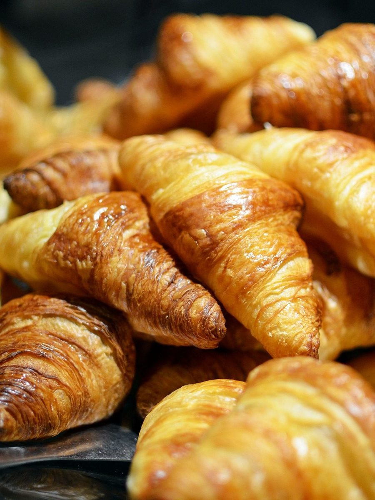
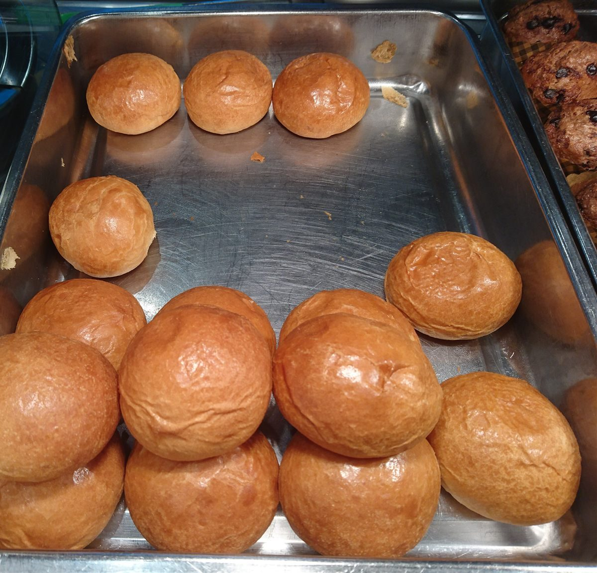

01さく
さく擬音
軽い歯ごたえで、薄い層が割れる音。
用例(制作側の想像)
たとえば焼き色のついたクロワッサンを手に取ったとき、こんな音を思い浮かべるかもしれません。

制作側の連想
店名の由来は分かりません。制作側は「ぱん」という音の響きから、パンを表す言葉、つまり「さく」「ふわ」「もち」のような食感の擬音を連想しました。そこでこのサイトは、擬音を見出し語にした小さな辞書のような作りにしています。お店の理念・由来とは無関係な、制作側の連想です。
辞書の用例は制作側の想像で、実際の商品・提供内容を示すものではありません。写真は国外・撮影地不明のフリー素材のイメージです。
擬音帖 その1
さく擬音
軽い歯ごたえで、薄い層が割れる音。
用例(制作側の想像)
たとえば焼き色のついたクロワッサンを手に取ったとき、こんな音を思い浮かべるかもしれません。

ふわ擬音
空気を含んで軽くふくらむ様子。
用例(制作側の想像)
たとえば山形のブリオッシュのように、焼き上がりがやわらかそうな姿を想像しました。

もち擬音
弾力があって、かむと押し返してくる感じ。
用例(制作側の想像)
たとえば丸くつやのある小さなパンを見て、こんな言葉を当てはめてみました。

ご案内
| 所在地 | 〒989-1752 宮城県柴田郡柴田町槻木下町2丁目2-30 |
|---|---|
| 電話 | なし |
| 営業時間 | 準備中 |
| 定休日 | 準備中 |
| ご予約 | 準備中 |
| 駐車場 | 準備中 |
| SNS | Instagram @comeme_pan |